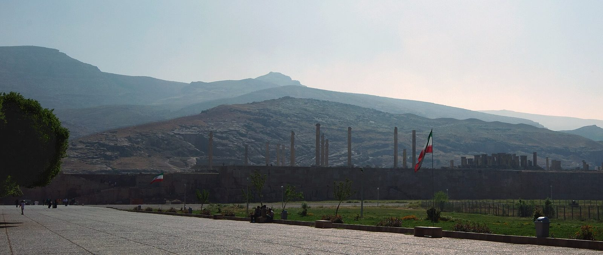
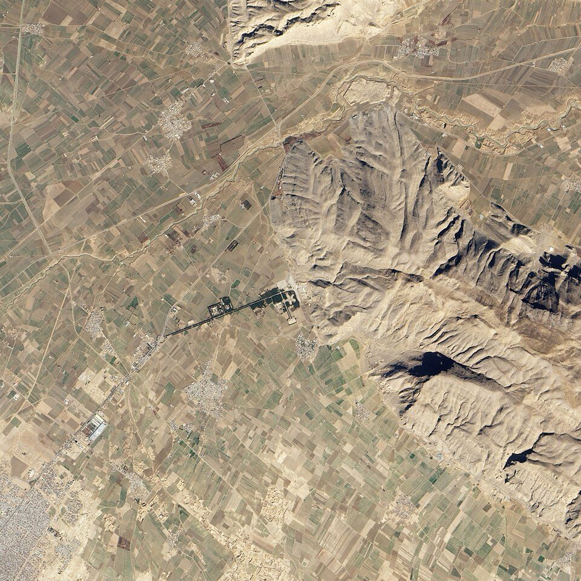
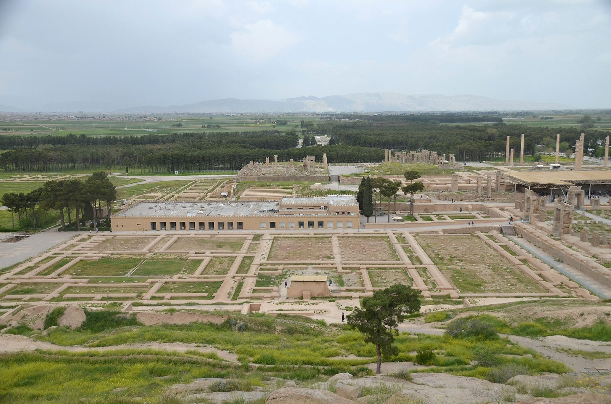
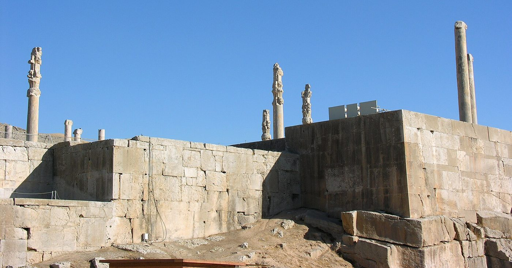

Unit 2 · Persepolis · Lesson 3
Why here? The significance of the site’s location
What did this spot offer Darius, and does the answer change with the purpose we ask about?
Year 11 Ancient History · Present with → or space · Read on a phone with R

Review · books closed · 6 minutes · press K for the timer
Five questions from Unit 1 and Lessons 1–2
- Name the five OVPRL questions, in order. Origin: who made it, when and where? · Value: what can it tell us for this inquiry? · Purpose: why was it made, and for whom? · Reliability: how far can we trust it, and for what? · Limitations: what can it not tell us?
- A coin minted in 64 CE lies in an undisturbed layer. When did the layer form, and what is this kind of date called? In or after 64 CE: the coin gives a terminus post quem, the earliest possible date. It does not mean the layer formed in 64 CE.
- Name Cyrus’s three great conquests, with their dates. Media (about 550 BCE), Lydia (about 546 BCE; the date is debated) and Babylon (539 BCE).
- Why do many historians doubt Darius’s account of how he became king in 522 BCE? Our main account is Darius’s own, the Behistun inscription: he says a Magian, Gaumata, posed as Cyrus’s son Bardiya. It was carved for the man who gained most from the story, and some historians think Darius overthrew the real Bardiya.
- Name one continuity from Pasargadae to Persepolis, with evidence. Columned halls (Cyrus’s palaces at Pasargadae; the audience halls at Persepolis) or guardian figures at the gates. Both capitals also stand in Fars, the Persian homeland: today’s lesson.
Mark your own answers in a different colour. Which question did you find hardest?
Learning intentions and success criteria · 2 minutes
Today’s goals
- understand where Persepolis was built and what its setting offered
- judge the significance of the site’s location for different purposes
- locate Persepolis and describe its setting using precise terms
- explain the significance of the location for at least two different purposes
- use a source as evidence for a claim about the location
Syllabus outcomes: AH-11-03 explains the role and significance of forces, features, events, individuals and groups in shaping the past · AH-11-05 analyses different types of sources for evidence to support a historical account or argument · AH-11-07 communicates historical understanding, applying historical knowledge, terms and concepts. Life Skills: AH-LS-05 describes features of places or societies in the ancient world · AH-LS-08 uses sources to form conclusions about the past.
Note-making · the routine for the whole course
How to structure your notes
questions and key terms, written after
short phrases, arrows (→ leads to), abbreviations (c. = about; km = kilometres)
- 1Rule up the page firstA cue column about a quarter of the page wide; title and date at the top; room for a summary at the bottom.
- 2Listen and look, then writeDon’t copy while a slide is being explained. Phrases, not sentences.
- 3Write your own notes at each ✎ checkpointThen compare with the model notes, one row at a time. Add what you missed in a second colour.
- 4Write the cue questions afterwardsUse exam verbs: explain, analyse, assess. To revise, cover your notes and answer the cues.
- 5Finish with a three-sentence summaryTwo checkpoints today: the setting · the two written sources.
Key vocabulary · add to the unit word wall
Words for describing a place and judging it
| The place | Meaning |
|---|---|
| Fars (Pārsa) | The Persian homeland in south-west Iran, where Persepolis stands. |
| Pasargadae | Cyrus the Great’s capital in Fars, with palaces in a garden landscape and his tomb. |
| Takht-e Jamshid | ‘Throne of Jamshid’ — the local Persian name for the ruins, after a legendary king. |
| terrace | The huge raised platform on which the buildings of Persepolis stand. |
| Achaemenid | The royal family (and empire) descended, they claimed, from an ancestor called Achaemenes; it ruled Persia from Cyrus the Great to Darius III. |
| Added for this lesson | Meaning |
|---|---|
| Marv Dasht | The wide plain in front of Persepolis, watered by the Pulvar and Kur rivers and farmed today. |
| Kuh-e Rahmat | ‘Mountain of Mercy’: the mountain behind Persepolis. The terrace was cut from its rocky spur and built up with stone blocks. |
| citadel | A walled stronghold on high ground; the word used in Welles’s translation of Diodorus for the terrace and its palaces. |
| royal road | A main road of the empire, with royal stations along it where messengers changed horses. |
| significance | How important something is, judged for a purpose: significance can be attributed for different purposes. |
1 · Reading the landscape · I do — think aloud
From above: a mountain behind, a plain in front

Persepolis Kuh-e Rahmat Marv Dasht plain Pulvar river Naqsh-e Rustam N ↑- 1A mountain behind: Kuh-e RahmatThe ‘Mountain of Mercy’ rises straight behind the site, on its east side.a backdrop, and rock to build on (but for defence, the excavators found, the weakest side)
- 2A terrace, cut and builtThe builders cut back a spur of the mountain and built up the rest with stone blocks: a platform about 450 × 300 m.a level, raised stage above the plain
- 3A plain in front: the Marv DashtWide, flat land to the west, watered by the Pulvar and Kur rivers. Today it is fields.room to grow food for builders, officials and the court
1 · Reading the landscape · I do → cold call
On the ground: a raised terrace between mountain and plain


What could the plain offer the people who built and used the terrace?
Farmland and river water to feed builders, officials and the court, and flat ground for roads and a lower city.
Why cut and build a terrace, instead of building on the flat plain?
To make one level, raised platform: the palaces stand high above the plain, seen by everyone who approaches, with the mountain as a backdrop.
1 · Reading the landscape · I do — the map
Where Persepolis sits: in Fars, linked by road to the empire
 Persepolis
Pasargadae
Susa
Ecbatana
Babylon
FARS
Persian Gulf
Persepolis
Pasargadae
Susa
Ecbatana
Babylon
FARS
Persian Gulf
- 6Naqsh-e Rustam · about 6 km northAlready an important place before Darius; he had his royal tomb cut into its cliff.
- 40Pasargadae · about 40 km north-eastCyrus’s capital, 43 km upstream along the Pulvar river: Persepolis is downstream from it.
- 500Susa · about 500 km west-north-westBy the royal road, about 552 km in 23 stages, as modern scholars reconstruct it from tablets found at Persepolis.
- ?So: near home, far from the older capitalsClose to the Persian royal places of Fars; far from Susa, Babylon and Ecbatana, but joined to them by roads.
1 · Reading the landscape · I do — test the predictions
Lesson 1: “Darius needed a new capital because …” Does the landscape support you?
Supported. Persepolis is in Fars, about 40 km from Cyrus’s Pasargadae, and its Old Persian name, Pārsa, is the name of the homeland.
Supported, as a possibility. A raised terrace on a wide plain is a stage seen from far off. The landscape fits it; Darius’s own words (next section) are the test.
Partly. The terrace is high, and the excavators found walls and towers. But the mountain side was the weakest and had to be walled, and in 330 BCE Alexander’s army reached and looted the city.
Not supported. The empire ran from Egypt and Lydia to Sind, and Persepolis lies far to the east-south-east of Susa and Babylon.
Notes checkpoint 1 of 2
The setting of Persepolis
2 · Two written sources · We do — supported reading
Darius on his own terrace: what does he say, and what does he leave out?
I am Darius, the great king, the king of kings, … the son of Hystaspes, the Achaemenid. And king Darius says: On this terrace, on which the palace has been built, on a place where no palace had been built before, by the grace of Ahuramazda, I built a palace. And Ahuramazda, and the other gods, wanted that this palace was built. And I built it. Therefore, it was made strong and excellent, and exactly as I had ordered it to be. And king Darius says: May Ahuramazda, with the other gods, protect me, and this palace, and what has been built on this terrace. May there never be someone who thinks bad of it!
Darius I (king 522–486 BCE) · inscription in Elamite cut into the southern wall of the terrace, beside his Old Persian and Babylonian texts · translation as published by Livius.org
What does it say about the site? Darius built a palace on this terrace, where no palace had stood before, and made it strong and excellent, as he ordered.
Who wrote it, and why? Darius, in his own name: it presents the palace as his work, wanted by Ahuramazda and the gods, and asks them to protect it.
What does it leave out? Why he chose this spot (no plain, rivers or roads); who did the building; whether anything stood nearby before him.
Strong evidence of how Darius wanted his terrace to be seen: new, his own, and backed by the gods. On its own, weak evidence of why he chose the site.
2 · Two written sources · We do — supported reading
A Greek historian on the citadel: what does he say, and how far can we trust it?
[4] The citadel is a noteworthy one, and is surrounded by a triple wall. The first part of this is built over an elaborate foundation. It is sixteen cubits in height and is topped by battlements. [5] The second wall is in all other respects like the first but of twice the height. The third circuit is rectangular in plan, and is sixty cubits in height, built of a stone hard and naturally durable. [6] Each of the sides contains a gate with bronze doors, beside each of which stand bronze poles twenty cubits high; these were intended to catch the eye of the beholder, but the gates were for security.
Diodorus, a Greek historian writing in the 1st century BCE, nearly 300 years after Alexander took Persepolis in 330 BCE · trans. C. Bradford Welles, Loeb Classical Library (1963) · a cubit is about half a metre
What does it say about the site? A citadel inside three walls, the third ‘sixty cubits’ (about 27 m) high, with a gate in each side.
Who wrote it, and why? A Greek writing long after, to show how rich and strong the city Alexander took had been: its gates both impressed and protected.
What does it leave out, and how far can we trust it? Who built it and why; the plain and the roads. No other ancient writer describes it. The 1930s excavators found walls with towers, in up to three lines, but none as high as his third wall.
Useful evidence that Persepolis was a strong, rich citadel, built both to impress and to protect: the walls and towers the excavators found partly support him. Weak evidence for the exact walls: he wrote nearly 300 years later, and his heights are greater than any the excavators found.
2 · Two written sources · We do — the class annotates the map
Put the evidence on the map: which source backs each label?
| Label on the map | Evidence | From | How strong? |
|---|---|---|---|
| terrace | “On this terrace, on which the palace has been built” | Darius, DPf | strong for what Darius claimed |
| walls | “surrounded by a triple wall”; walls and towers found in the 1930s | Diodorus 17.71; Schmidt’s excavation | partly confirmed: walls were found, but none as high as he says |
| homeland | the city’s Old Persian name, Pārsa, is the name of the land | Livius, ‘Persepolis’ (Old Persian Pârsa) | strong |
| royal road to Susa | stations named in travel tablets; about 552 km in 23 stages (a modern reconstruction) | tablets found at Persepolis (Livius) | strong for the stations; the distance is a modern estimate |
| plain | fields beside the site today | NASA satellite image, 2004 | shows the land now, not proof of ancient farming |
Notes checkpoint 2 of 2
Two written sources about the site
3 · Judging significance · You do · 8 minutes · press K for the timer
Rank the six reasons on the ladder, then justify your top two
- most significant
- least significant
Rank all six. For your top two, write “… was significant for … because …” with one piece of evidence each.
Use your map labels and Notes 1. Start with the card you have the most evidence for.
Which card would Darius rank first, and which would a Greek visitor? Does the ranking change with the purpose?
1 · Homeland: significant for royal identity, because the new capital stood in Fars near Cyrus’s Pasargadae and bore the homeland’s name, Pārsa. 2 · Display: significant for royal power, because the terrace lifts the palaces above the plain and DPf presents them as Darius’s work, made by the gods’ grace. Defence ranks lower: walls and towers were found, but the mountain side was the weakest and had to be walled.
3 · Judging significance · You do · 12 minutes · press K for the timer
Short answer: explain the significance of the geographical location of Persepolis
Explain the significance of the geographical location of Persepolis.
- significance for at least two purposes
- one source used as evidence, with its origin
- end with a judgement: significant for what, most of all?
Use the stem: “Its location in … was significant for … because …, which made it significant for …”
Darius built Persepolis in the Persian homeland of Fars, at the foot of Kuh-e Rahmat, on the edge of the fertile Marv Dasht plain. Its location in the homeland was significant for royal identity, because it placed the new capital about 40 km from Cyrus’s Pasargadae, and its Old Persian name, Pārsa, was the name of the land itself. The setting was also significant for display: the builders cut back the mountain’s rocky spur and built up a vast terrace, which raised the palaces high above the plain, and Darius’s own terrace inscription (DPf) presents the palace as built “by the grace of Ahuramazda”. For defence the evidence is mixed. The excavators found walls and towers, strongest on the mountain side, which was the hardest side to defend, and the Greek historian Diodorus describes a citadel “surrounded by a triple wall”, but he wrote nearly 300 years later and describes walls higher than any that survive. The plain and its rivers could feed the court, and a royal road linked the city to Susa. On balance, the location was most significant as a statement of Persian royal identity and power, which made it significant for display as much as for practical needs.
Was Persepolis ‘remote’? Remote from whom — and is that a Greek or a Persian point of view? Clue: Herodotus (5.53): 111 stages, about 90 days, Sardis to Susa; Persepolis 23 stages further; he never names it.
Check for understanding · hinge question · hold up your A, B, C or D card on “3, 2, 1, show”
Why was Darius’s choice of Fars significant?
- AIt lay close to the geographic centre of the empire
- BIt was the homeland of the Persians and their kings
- CIt held the most fertile farmland in the empire
- DIt lay safely out of reach of enemy armies
It tied the new capital to the royal family’s origins, near Cyrus’s Pasargadae. A is wrong: the empire ran from Egypt and Lydia to Sind, and Persepolis lies far to the east-south-east of Susa and Babylon. C is wrong: the plain is fertile, but Herodotus thought Babylonia’s land “by far the most fertile in grain which we know”. D is wrong: Alexander’s army reached and looted it in 330 BCE.
Finish your notes If time · or at home
Summary: three sentences
- Where was Persepolis built, and what did its setting offer?
- What do DPf and Diodorus show, and what do they leave out?
- For which purpose was the location most significant, and why?
Persepolis was built in Fars, the Persian homeland, on a terrace cut from the spur of Kuh-e Rahmat and built up above the Marv Dasht plain, whose land and rivers could feed the court, and a royal road linked it to Susa. Darius’s inscription DPf shows how he wanted the terrace seen, as his own new work made with the gods’ favour, while Diodorus, writing nearly 300 years later, describes a walled citadel; neither explains why the site was chosen. The location was probably most significant for royal identity and display, because it set a raised stage for the king in the homeland of his people, close to Cyrus’s Pasargadae.
Exit ticket · 5 minutes · before you leave
One sentence, two parts
“Persepolis was built here because … which shows …”
A precise feature of the location (the Persian homeland of Fars; a raised terrace above the Marv Dasht plain; the royal road to Susa), and what it shows: a purpose (royal identity, display, supply, communication), with a hedge where the evidence is thin (“probably”, “could”).
Then check yourself against today’s three “I can” statements. Next lesson: discovering Persepolis, from travellers’ sketches to scientific excavation.
Practice and review · 1 of 3 · true, false, justify
True or false? Justify your answer
- 1Persepolis stands in Fars, the Persian homeland. True — in south-west Iran; its Old Persian name, Pārsa, is the name of the land.
- 2The terrace of Persepolis is a natural hill. False — a spur of Kuh-e Rahmat was cut back and the platform built up with stone blocks.
- 3Pasargadae is about 500 km from Persepolis. False — Pasargadae is about 40 km away; Susa is about 500 km.
- 4DPf proves that nothing had ever been built in the area before Darius. False — it is Darius’s own claim, made to present the palace as his new work; a claim is not proof.
- 5Diodorus saw the walls of Persepolis himself, in 330 BCE. False — he lived and wrote in the 1st century BCE, nearly 300 years later, probably using earlier histories.
- 6A location can be significant for one purpose and less significant for another. True — e.g. very significant for royal identity, less clearly for defence.
Practice and review · 2 of 3 · writing
Write it as a historian
Rewrite with a precise noun group and a justification: “Persepolis was near farmland.”
The fertile Marv Dasht plain in front of the terrace made the site significant for supplying the court, because its farmland and rivers could feed the builders, officials and courtiers who lived and worked there.
Finish: “Diodorus 17.71 is reliable for … but not for … because …”
Diodorus 17.71 is reliable for the general picture of a rich and strongly walled citadel, which the walls and towers found by the excavators partly support, but not for the exact walls, because he wrote nearly 300 years after Alexander took the city and his third wall is higher than any the excavators found.
Was Persepolis ‘remote’? Explain: remote from whom, and does the claim reflect a Greek or a Persian point of view? Clue: Herodotus (5.53) counts 111 stages and about 90 days on the royal road from Sardis to Susa; Persepolis lay 23 stages beyond Susa, and Herodotus never names it.
Whether Persepolis was remote depends on the point of view. For a Greek, it lay far beyond the empire’s western lands: Herodotus counts 111 stages and about ninety days on the royal road from Sardis to Susa, and Persepolis lay a further 23 stages beyond Susa. Herodotus never names Persepolis at all, which suggests how little Greeks of his time knew of it. For a Persian king, however, it stood in the heart of his homeland of Fars, near Cyrus’s Pasargadae, and a royal road with stations for changing horses linked it to Susa. Calling Persepolis ‘remote’ therefore reflects a Greek perspective more than a Persian one.
Practice and review · 3 of 3 · cover your notes and answer from memory
Quick checks
- Describe where Persepolis was built. In Fars, the Persian homeland in south-west Iran, at the foot of Kuh-e Rahmat, facing the Marv Dasht plain.
- How was the terrace made? A rocky spur of the mountain was cut back and the platform built up with stone blocks: about 450 × 300 m.
- How far are Naqsh-e Rustam, Pasargadae and Susa from Persepolis? About 6 km north; about 40 km north-east; about 500 km west-north-west (about 552 km by the royal road, as reconstructed).
- What does Darius claim about the site in DPf? That he built a palace on this terrace, where no palace had been built before, by the grace of Ahuramazda.
- Why should we be careful with Diodorus’s ‘triple wall’? He wrote nearly 300 years later and no other ancient writer describes it; the excavators found walls and towers, but none as high as his third wall.
- For which purpose was the location most significant? Give one reason. Depends on the purpose, but probably royal identity: it put the capital in the Persian homeland, near Cyrus’s Pasargadae.
Sources and credits
Where everything comes from
Darius I, terrace inscription DPf (and DPh): translation as published by Livius.org (Jona Lendering, after P. Lecoq, 1997), quoted briefly, with credit; © Livius.org. Facts about the site, Pasargadae, Naqsh-e Rustam and the royal road: Livius.org, ‘Persepolis’, ‘Pasargadae’, ‘Naqš-e Rustam’ and ‘Royal Road’.
Diodorus of Sicily, Library of History 17.70–71, trans. C. Bradford Welles, Loeb Classical Library, Vol. VIII (1963), with Welles’s notes; public domain, from LacusCurtius.
Herodotus 1.193 and 5.53: A. D. Godley’s translation (Loeb, Vol. I 1920 and Vol. III 1922), as revised by the Perseus Digital Library (CC BY-SA 3.0 US). The Kur and Pulvar (Sivand) rivers: Cameron Petrie, Exploring Routes and Plains in Southwest Iran: Kur River Basin, ArchAtlas v5.0 (2005).
Erich F. Schmidt, The Treasury of Persepolis and Other Discoveries in the Homeland of the Achaemenians, Oriental Institute Communications 21 (Chicago, 1939), pp. 1, 7–8: free PDF from ISAC; quoted briefly, with credit.
Teacher resource: Where Was Persepolis? (class notebook ‘Persepolis’).
Outcomes and content: NSW Education Standards Authority (NESA), Ancient History 11–12 Syllabus (2024). © NESA.
- Approaching Persepolis: the terrace below Kuh-e Rahmat · Photo: A. Davey · CC BY 2.0 · source
- Persepolis and its setting from space (NASA EO-1) · Jesse Allen, NASA Earth Observatory (EO-1 ALI data) · Public domain · source
- View from the mountainside over the terrace to the plain · Photo: Carole Raddato · CC BY-SA 2.0 · source
- The terrace wall built up on the natural rock (cropped) · Photo: Hansueli Krapf · CC BY-SA 3.0 · source
- Relief map of Iran (markers added) · Map: Uwe Dedering (Natural Earth data) · CC BY-SA 3.0 · source
.jpg){kind=link}

.jpg){kind=link}


All images are public domain or openly licensed, and were resized for the web (the approach photograph, the terrace wall, the satellite image and the relief map were also cropped). The labels on the satellite image and the map were added for this lesson. Each image is shared under the licence shown.